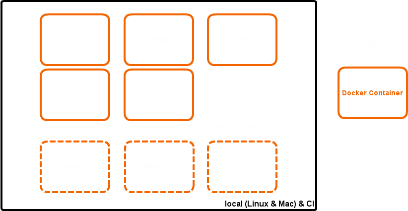

Docker @ Fasterize
Why ? How ?
Created by David Rousselie / @drousselie
What is Fasterize ?
- Front End Optimizer as a Service
- Optimize web pages in real time
What is Fasterize ?
Fasterize deployment
- Fully automated deployment with Chef & Capistrano
- 18 roles Chef (Front, Cache, Proxy, Storage, API, ...)
- > 30 mins to apply Chef on ~30 hosts
- Orchestration with Capistrano tasks
Current Fasterize dev environment
Why Docker at Fasterize?
- Applying Chef is slow
- Creating a new dev environment from scratch is way too long
- Chef fails regularly because of external dependencies (npmjs, Github, rubygems, ...)
Build of Docker images
Dockerfiles
Reuse our Chef cookbooks to build Docker images
FROM docker.fasterize.com/fasterize-base
ADD . /fasterize/chef-repo
RUN cd /fasterize/chef-repo && chef-solo -c lib/chef/solo.rb Cache
# SSHD
EXPOSE 22
# Nginx
EXPOSE 80
CMD circusd /etc/circus/circus.conf
Intermediates images
- Using Chef to build Docker image breaks Docker cache
- To limit Docker images size, creating intermediates images:
- init-chef: install Chef
- fasterize-base: apply Chef Base role
- fasterize-cache: apply Chef Cache role
- fasterize-proxy: apply Chef Proxy role
- fasterize-proxy-app: deploy Proxy application
- ...
Export, import images
- Exporting an image then re-importing it can reduce image size
- But:
- No more intermediate image when downloading
- Multiple images with the same base image might be heavier
- Beware, export does not keep named sockets dotcloud/docker#4336
RUN Cleanup
WRONG: does not changed image size:
RUN cd /fasterize/chef-repo && chef-solo -c lib/chef/solo.rb Cache
RUN (apt-get autoremove -y; \
apt-get clean -y; \
rm -rf /tmp/*; \
rm -rf /var/lib/apt/lists/*; \
rm -rf /var/cache/apt/archive/*deb; \
rm -rf /var/cache/apt/*bin; \
rm -rf /var/chef/cache)
RUN cd /fasterize/chef-repo && chef-solo -c lib/chef/solo.rb Cache \
&& (apt-get autoremove -y; \
apt-get clean -y; \
rm -rf /tmp/*; \
rm -rf /var/lib/apt/lists/*; \
rm -rf /var/cache/apt/archive/*deb; \
rm -rf /var/cache/apt/*bin; \
rm -rf /var/chef/cache)
Docker images size optimization
- ex:
fasterize-cache = 1279 Mo - 8 Docker images like
fasterize-cache~10.2Go - export then re-import:
832 Mo * 8 > 6.5 Go - cleanup:
1 Go * 8 > 8 Go - export + cleanup:
754 Mo * 8 > 6 Go - exported fasterize-base + cleanup:
746 Mo + (815 Mo - 746 Mo) * 8 > 1.2 Go
Serverspec with Docker
describe "fasterize-cache" do
before :all { @container = start_docker_container }
after :all { @container.kill }
describe package('nginx') do
it { should be_installed }
end
describe service('nginx') do
it { should be_enabled }
it { should be_running }
end
describe port(80) do
it { should be_listening }
end
end
Use of Docker on our dev environment
Use of Docker on our dev environment
- 1 VM to host most containers with multiples hardcoded IP (same IP as previous dev environment)
- Circus as process supervisor
- Proxy, Worker and Test used as simple processes on our dev env, as local Docker containers on CI
- Fig.io to run containers
- Beware of Chef facts (Nb CPU, memory, ...) might not match between build and run
What's next ?
What's next ?
- Multiple hosts Docker deployment
- Dynamic container discovery (Serf in test)
- Use on all environments
The End
By David Rousselie / @drousselie
http://fasterize.github.io/docker-at-fasterize